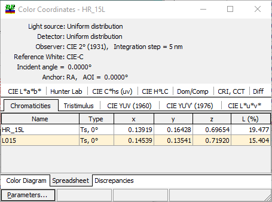
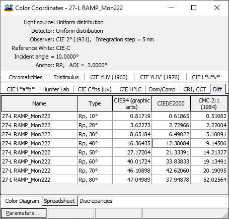
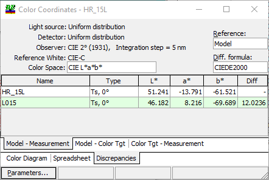
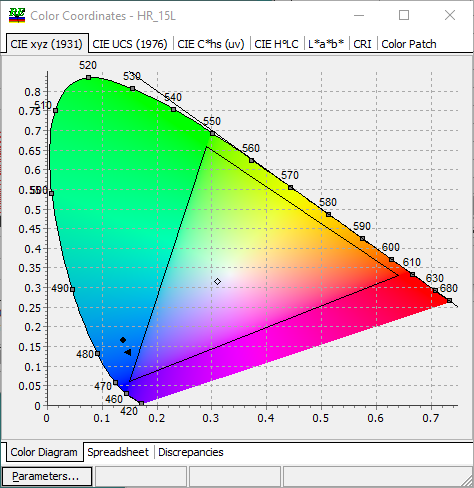
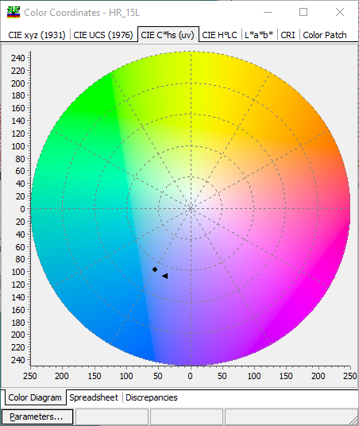
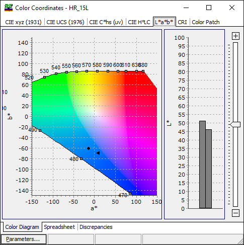
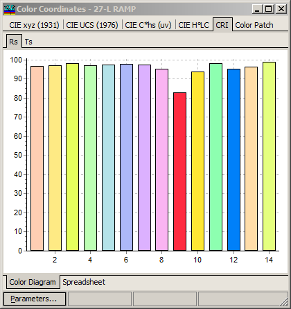
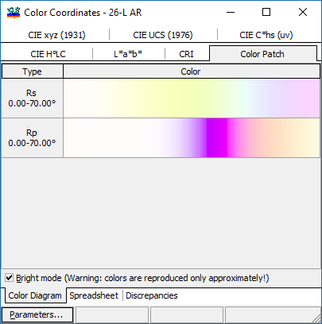

Color Evaluation
The Color command in the View Menu starts the color evaluation analysis tool. When this command is activated, a dialog window labeled Color Evaluation Parameters appears. After the choice of parameters is confirmed, the color coordinates of the design may be calculated. You can view color coordinates in a graphical or tabular form by selecting Color Diagram or Spreadsheet pages, respectively. In the Spreadsheet mode, the window shows the results of evaluating the color coordinates for the current design.
Additional Discrepancies tab allows you to see the differences:
Model - Measurement
Model - Color Target
Color Target - Measurement
You can view these differences at the corresponding sub-tabs.
Light source, detector, observer, integration step, reference white, and incident angle used for color evaluation are shown in the upper part of this window. Light source and detector can be changed using the corresponding databases. Other options affecting color evaluation can be modified using the Color tab of the General Configuration dialog. By selecting different tabs, it is possible to view calculated color characteristics related to different color spaces and other values.
Available characteristics include:
x, y, z chromaticities and luminosity
X, Y, Z tristimulus values
u, v, Y values as defined by CIE YUV (1960)
u’, v’, Y values as defined by CIE YU’V’ (1976)
u*, v* , L* values as defined by CIE L*u*v* color space
a*, b*, L* values as defined by CIE L*a*b* color space
a, b, L Hunter Lab values
C, h*(uv), s(uv) values (CIE)
H°(ab), L*, C*(ab) values (CIE)
Dominant, Complimentary wavelengths, and Excitation purity (Dom/Comp tab)
Correlated Color Temperature and Color Rendering Index (CRI & CCT tab)

Diff tab allows to study the differences of color characteristics with respect to specified Anchor point, for example:

Color difference formulas included in this calculation can be configured with the right-click menu.

At the Discrepancies tab, it is also possible to select different color difference formulas (see https://en.wikipedia.org/wiki/Color_difference).
The Discrepancies tab with sub-tabs is shown below. In each sub-tab, it is possible to select what will be used as a reference when computing color differences.

In the Color Diagram mode, there are five different types of diagrams. They include:
CIE xyz (1931) chromaticity diagram
CIE UCS (1976) diagram
CIE C*hs(uv) diagram
CIE H°LC diagram
L*a*b* diagram

In CIE XYZ and CIE UCS (1976) diagrams, each point corresponding to some visible color is shown with that approximate color, while the points that do not correspond to any visually perceptible colors are painted gray. The pure spectral colors are located at the boundary of the visible colors zone. In the picture above, spectral colors with a wavelength step of 5 nm are painted as squares at the edge of the chromaticity diagram. The white color corresponds approximately to the point with coordinates x = y = z = 1/3; the exact values depend on the choice of one of the standard light sources.

CIE C*hs (uv) and CIE H°LC diagrams display positions of hue and chroma correlates in a polar coordinate system.
The crosses indicate values of color coordinates for the characteristics shown in the spreadsheet. The display of additional features on the diagram is controlled by the settings in the Color Evaluation Parameters dialog. Some of these additional features are not applicable to CIE C*hs(uv) and CIE H°LC diagrams.
L*a*b* color diagram shown below is more complicated (see https://en.wikipedia.org/wiki/Lab_color_space). Color representation depends on the selected value of L* , therefore OptiChar introduces a slider at the right part of the window to adjust L* value for the display. It is recommended to select L* close to values of Model color, Measurement color, or Color Target in order to have consistent color representation.

If you want to re-run the Color Evaluation procedure with different settings, press the Parameters… button to set Color Evaluation Parameters and restart the color evaluation procedure

CRI tab allows to estimate specific CRI for each test sample.

Color Patch tab displays colors corresponding to a selected characteristic. If a range of incident angles is selected, the color patch displays the transition of colors when the angle is changing within specified limits.
Note: Colors are reproduced only approximately! Brightmlode setting controls if gamma correction is applied to ColorPatch display or not.